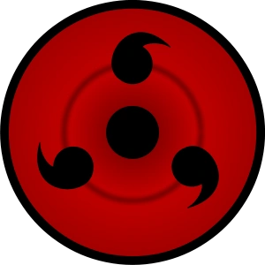

ã…¤Começar uma Wikiã…¤InÃcioㅤ•ㅤExplorarㅤ•ㅤMÃdiaㅤ•ㅤSérieㅤ•ㅤComunidadeㅤㅤㅤㅤㅤ ㅤㅤㅤㅤㅤㅤㅤㅤㅤㅤㅤㅤㅤㅤㅤㅤㅤㅤㅤㅤㅤㅤㅤㅤㅤㅤㅤㅤㅤㅤㅤㅤㅤㅤㅤㅤㅤㅤㅤㅤㅤㅤㅤㅤㅤㅤㅤㅤㅤㅤ
Por trás de todo mito há um fundo de verdade e nesse caso não é diferente. A expressão "Rinnegan Supremo" tem uma origem, na light novel A Verdadeira História de Sasuke: Alvorada. No capÃtulo 1, o narrador apresenta o protagonista da história, Sasuke Uchiha, e descreve sua aparência, o que inclui seus olhos.
No recorte acima, o narrador relata aparência dos olhos de Sasuke e, ao se referir ao seu olho esquerdo, ele o descreve como o "supremo Rinnegan" (至高の輪廻眼, shikō no Rinnegan), que também podemos traduzir como "Rinnegan supremo". Independente da ordem de tradução, a construção semântica da frase no japonês atribui "supremo" (至高, shikō) como adjetivo para "Rinnegan", indicando um tipo patamar elevado.
Embora a expressão realmente exista, o contexto onde ele foi inserido não atribui uma nomenclatura exclusiva para o Rinnegan de Sasuke, também não denota nenhum tipo de superioridade em relação aos outros Rinnegan, ele apenas reafirma uma informação há muito tempo já conhecida, o Rinnegan é um dōjutsu supremo. A atribuição "supremo" (至高, shikō) já foi associada ao Rinnegan anos antes do lançamento de Sasuke Shinden: no terceiro databook, o Rinnegan em posse de Nagato e do Eremita dos Seis Caminhos foi descrito como um "olho supremo" (至高の瞳, shikō no hitomi).
Mas afinal, o Rinnegan do Sasuke é supremo, ou não? Sim, ele é supremo!! Assim como qualquer outro Rinnegan também é!! Conforme pudemos ver, o adjetivo "supremo" é inerente ao Rinnegan, independente de qual seja o usuário ou a variante. Agora que você já está entendido sobre o assunto, lembre-se de compartilhar este blog com aquele seu amigo que acha que o Rinnegan do Sasuke é superior aos demais por ser supremo!! Qualquer dúvida é só deixar nos comentários!! 😉